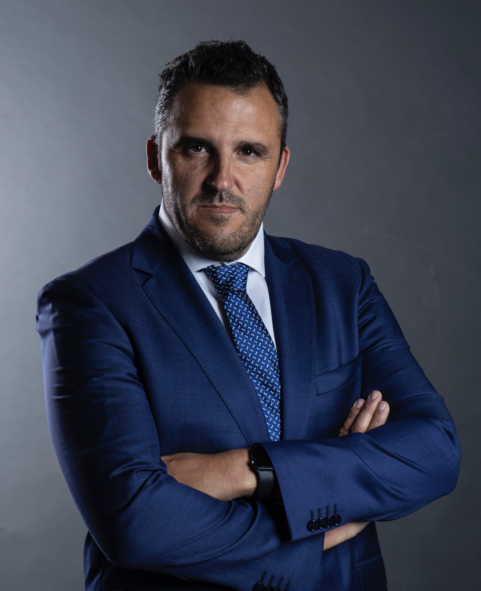
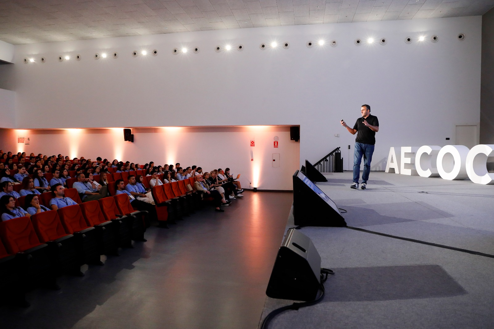
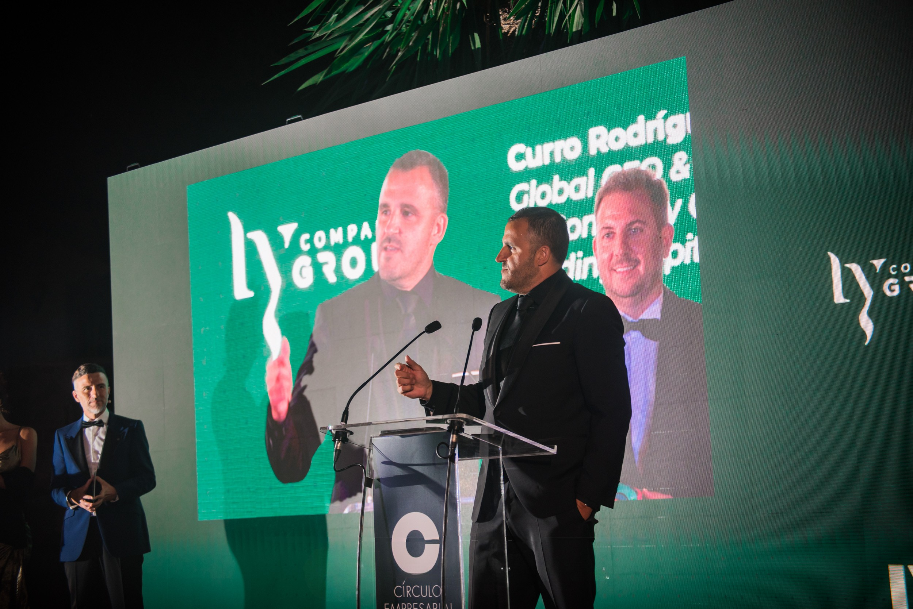
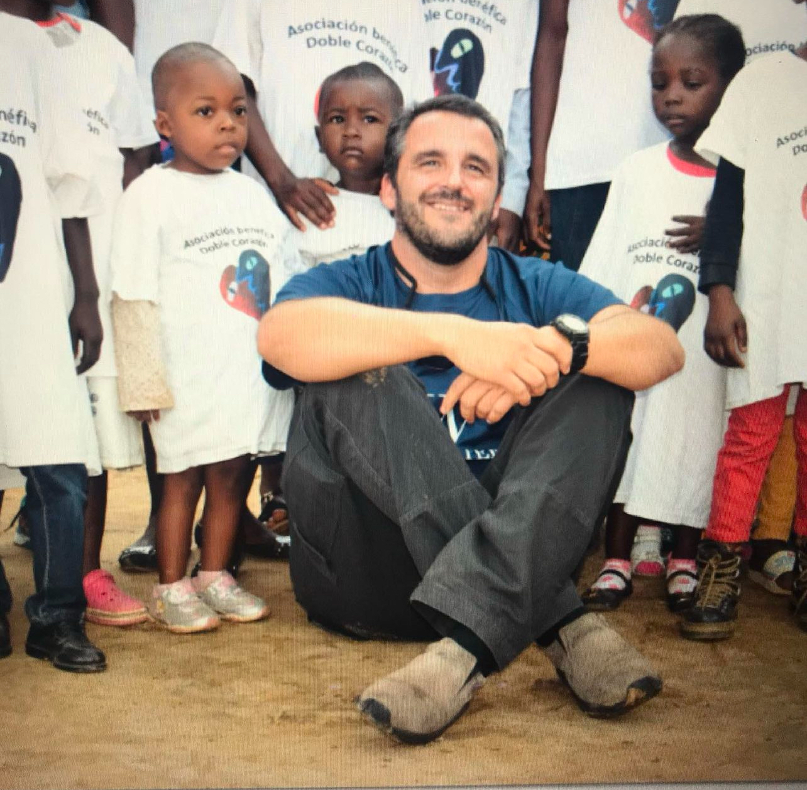
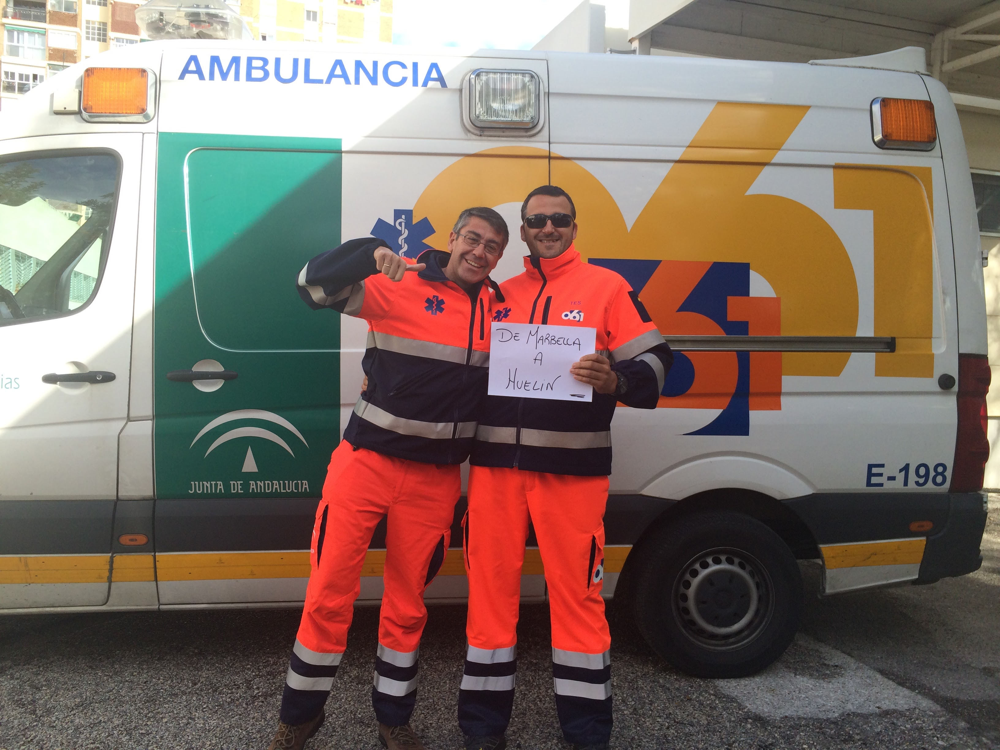
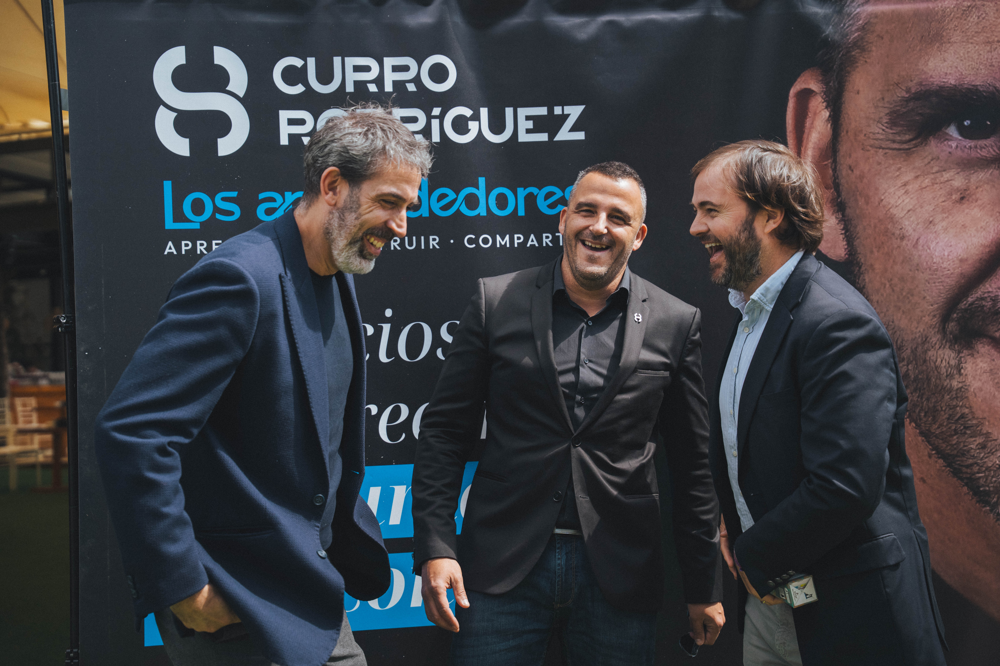

Galería
Momentos que
cuentan historias

CEO de Ly Company Group.jpg) Ponencias en Europa, América y Oriente Medio
Ponencias en Europa, América y Oriente Medio
Conferencia ante más de 1.000 empresarios
Ly Company — reconocida por el Financial Times
Fundación Ly Company Agua y Vida
Más de 20 años en equipos médicos del 061
Fundador de la comunidad Los Aprendedores